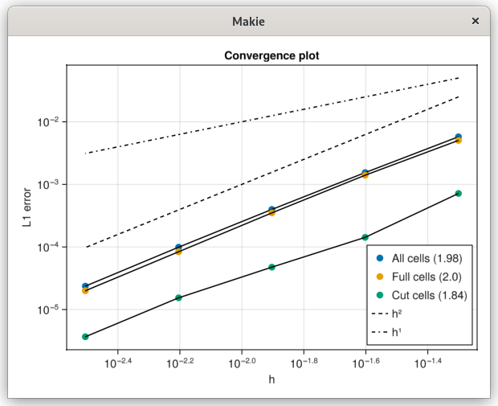
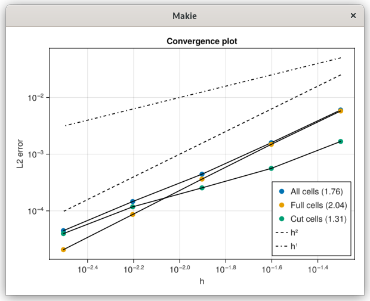

Poisson 2D
This example demonstrates how to solve a 2D diffusion (Poisson) equation inside a circular region.
Here, we create a Cartesian mesh of size nx × ny, and define a circle inside that mesh. The function identifies cells that lie inside, outside, or on the circular boundary.
# Build mesh
nx, ny = 160, 160
x0, y0 = 0.0, 0.0
lx, ly = 4., 4.
mesh = CartesianMesh((nx, ny), (lx, ly), (x0, y0))
# Define the body
radius, center = ly/4, (2.01, 2.01)
circle = Body(
(x,y,_=0) -> (sqrt((x-center[1])^2 + (y-center[2])^2) - radius),
(x,y,_) -> (x,y),
((x0,lx), (y0,ly)),
false)This creates the discrete operators needed to assemble and solve the diffusion equation based on the mesh and the circular domain.
# Define capacity/operator
capacity = Capacity(circle, mesh)
operator = DiffusionOps(capacity.A, capacity.B, capacity.V, capacity.W, (nx+1, ny+1))We impose Dirichlet boundary conditions of 0.0 on all edges, define a constant source term f(x,y)=4.0, and set the diffusion coefficient K=1.0.
bc_interface = Dirichlet(0.0)
bc_b = BorderConditions(Dict(
:left => Dirichlet(0.0),
:right => Dirichlet(0.0),
:top => Dirichlet(0.0),
:bottom => Dirichlet(0.0)))
f = (x,y,_)->4.0
K = 1.0
phase = Phase(capacity, operator, f, K)The solver is constructed and run using a direct solver (the “backslash” operator). The numerical solution is stored in solver.x.
solver = DiffusionSteadyMono(phase, bc_b, bc_interface)
solve_DiffusionSteadyMono!(solver, phase; method=Base.:\)These plots show the error distribution in log scale and the L1/L2 norms for different mesh sizes, demonstrating the convergence characteristics of the solver.  